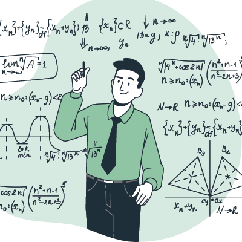
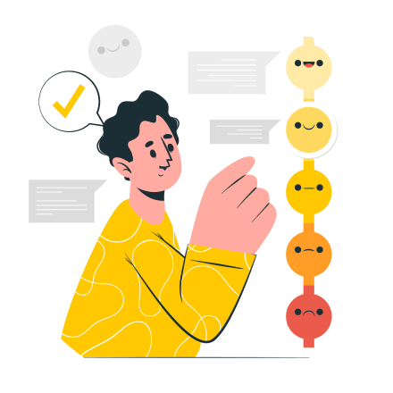
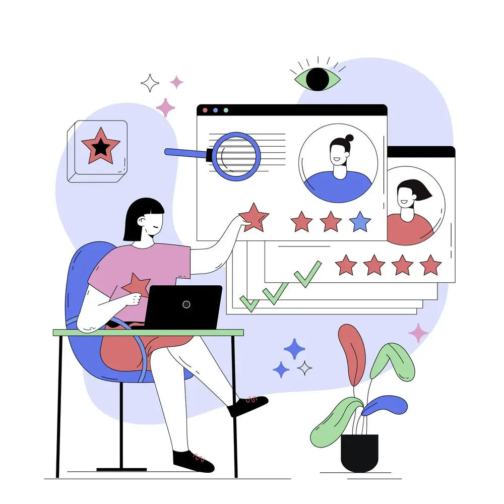

Мы рады поделиться с вами современными знаниями в области управления персоналом!
В данном разделе вы найдете практические статьи и рекомендации экспертов по использованию методик оценки, мотивации и развития сотрудников, а также можете бесплатно скачать полезные формы и шаблоны.

Для чего в организации нужен ассессмент?
Какие задачи он решает? Какова его структура и содержание каждого этапа? Рассказываем самое важное об ассессменте простыми словами.
Для чего в организации нужен ассессмент?
Какие задачи он решает? Какова его структура и содержание
каждого этапа?
В статье вы также познакомитесь с основными принципами ассессмента, узнаете о том, какие методики оценки лучше всего подходят для тех или иных компетенций, как проходит процедура обработки результатов и сессия обратной связи участникам.
Рассказываем самое важное об ассессменте простыми словами.
наверх
наверх ▲

Когда и зачем требуется индивидуальная оценка?
Executive assessment или глубинное интервью как метод оценки, его цели и задачи, структура и особенности применения.
Индивидуальный ассессмент, он же - executive assessment, он же - vip, он же - глубинное интервью....
Вокруг данного метода ходит немало слухов и предубеждений. Действительно ли он нужен и так ли он хорош, как о нём говорят? Давайте разберёмся.
Поговорим о целях и задачах индивидуального ассессмента. О ситуациях, где он необходим, а где - совершенно бесполезен. Рассмотрим структуру метода, познакомимся с особенностями проведения и вариантами индивидуальной оценки.
наверх
наверх ▲
Для каких задач целесообразно применять метод 360 градусов? Как правильно подготовить и провести оценку?
Обзор технологии шаг за шагом, с примерами и рекомендациями.
Круговая оценка используется широко, но не всегда правильно.
Для каких задач целесообразно применять метод 360 градусов? Как правильно подготовить и провести оценку? Как избежать распространенных ошибок?
Научимся выбирать правильные критерии, грамотно формулировать оценочные вопросы, узнаем о тонкостях организации опроса и многом другом!
наверх
наверх ▲

Как правильно подготовиться и провести опрос? Как использовать результаты?
Делимся рекомендациями и 10-летним опытом проведения оценки удовлетворенности.
Разработать качественный опросник - только половина дела.
От чего зависит результативность и достоверность опроса удовлетворенности персонала? Как добиться искренних ответов и вовлеченности участников?
Расскажем, как правильно подготовиться к проведению опроса, на что обратить внимание при планировании сроков оценки. Узнаем, как извлечь максимальную пользу из результатов и как не обмануть ожиданий сотрудников.
наверх
наверх ▲

Может ли бизнес-кейс заменить ассессмент?
Что из себя представляет кейс-тестинг и в каких случаях его стоит применять? Делимся опытом разработки.
Может ли бизнес-кейс заменить ассессмент?
Что из себя представляет кейс-тестинг и в каких случаях его стоит применять?
Многие компании успешно используют бизнес-кейсы не только для отбора кандидатов, но и для развития сотрудников. Узнаем, как задействовать потенциал кейс-тестинга по максимуму.
Подскажем, как научиться разрабатывать кейсы и где найти уже готовые.
наверх
наверх ▲

В чем ключевые цели оценки сотрудников?
Как для HR-задач подобрать релевантный и качественный метод оценки.
В чем ключевые цели оценки сотрудников?
Как для HR-задач подобрать релевантный и качественный метод оценки?
Как оценка связана с бизнес-процессами организации и как правильно определить критерии предстоящей диагностики.
Расскажем о возможностях оценки сотрудников коротко и по делу.
Подробно рассказываем о ключевых этапах создания кадрового резерва в компании.
С чего начать, как определить потребность в резерве, какими методами оценить кандидатов, как правильно развивать и что делать, если резервист готов, а продвигать пока некуда? Давайте выясним!
Подробно рассказываем об основных этапах создания кадрового резерва в организации.
Резерв обеспечивает преемственность корпоративного опыта и знаний в компании, безопасность ключевых должностей и бизнес-направлений.
Формируя кадровый резерв, часто возникает множество вопросов. С чего стоит начать, как определить потребность в резерве, какими методами оценить кандидатов, как их правильно развивать и что делать, если резервист подготовлен, а продвигать его пока некуда? Давайте выясним!
наверх
наверх ▲

Как составить план развития сотрудника, чтобы он реально работал?
Чтобы ИПР принес пользу сотруднику и компании, следуйте простым, но важным принципам.
Как составить план развития сотрудника, чтобы он реально работал?
Кто отвечает за результаты индивидуального плана развития? Как объединить в плане развития интересы бизнеса и сотрудника? Какие методы развития лучше всего использовать? Что делать после выполнения ИПР?
Написали ИПР и забыли. Условия работы изменились, а план развития нет. Составили красивый план, но он не работает. Разбираемся с проблемами и предотвращаем ошибки.

Простые и работающие советы руководителю по адаптации новых сотрудников.
Вовлекаем новичка в совместную работу, правильно хвалим и умело поощряем инициативу, отвечаем на вопросы и прислушиваемся к мнению.
Простые и работающие советы руководителю по адаптации новых сотрудников.
Как относиться к ошибкам новичка и частым вопросам? С каких задач лучше всего начать? Стоит ли проверять новобранца на «прочность»? Как избежать недовольства в команде из-за пополнения?
Вовлекаем новичка в совместную работу, правильно хвалим и умело поощряем инициативу, отвечаем на вопросы и прислушиваемся к мнению.